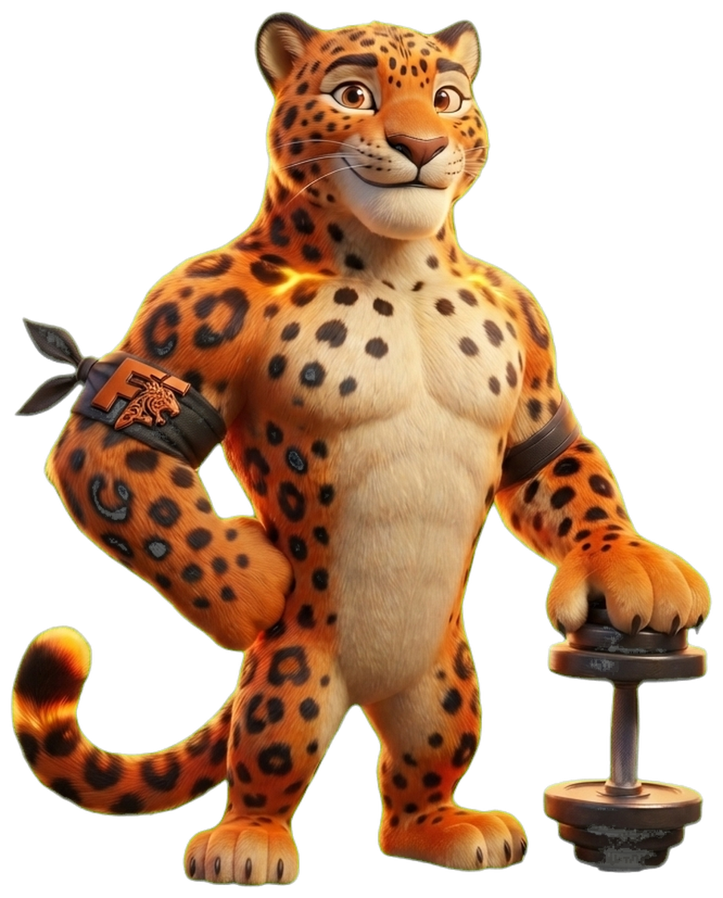

App de treino gamificado
Solta a fera.
Seu treino com progressão automática, calibrado para o seu corpo e seus aparelhos. A cada treino concluído, seu mascote evolui junto com você.
Android — em breve
iOS — em breve

Sobre
Treinar vira um hábito que você quer manter
O Fera Fit nasceu para tornar o treino mais consistente. Em vez de depender só de força de vontade, você acompanha a evolução do seu mascote a cada treino concluído — um jeito simples de visualizar o seu progresso e manter a motivação no dia a dia.
O que você encontra
🔥
Progressão automática
🐆
Mascote evolutivo
📊
Evolução acompanhada